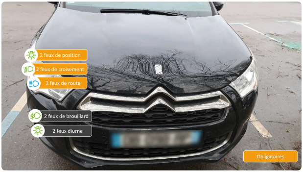
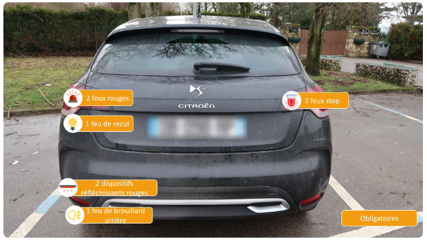
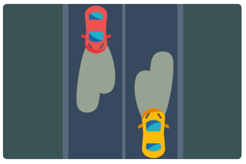
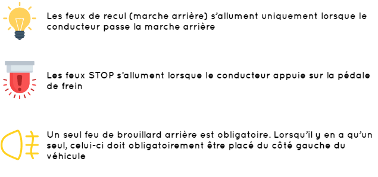

Les feux obligatoires et facultatifs
À l’avant comme à l’arrière du véhicule,
plusieurs feux sont obligatoires pour permettre au conducteur de mieux voir et d’être vu.
Les feux obligatoires à l’avant sont :
- 2 feux de route, portée d’au moins 100 mètres
- 2 feux de croisement, portée d’au moins 30 mètres
- 2 feux de position, visibles à au moins 150 mètres

Les feux obligatoires à l’arrière sont :
- 2 ou 3 feux STOP rouges
- 1 feu de marche arrière (ou feu de recul)mais les véhicules en ont souvent 2
- 1 feu de brouillard arrière gauche, mais les véhicules en ont souvent 2
- 2 feux de position rouges (feux rouges), visibles à au moins 150 mètres
- 2 catadioptres rouges

Les feux de croisement éclairent plus loin à droite qu’à gauche pour
éviter d’éblouir les usagers venant d’en face


Les feux facultatifs sont :
- Les feux diurnesqui permettent de mieux voir le véhicule de jour
- Les feux de brouillard(seul le feu de brouillard arrière gauche est obligatoire)
Les aides au conducteur
Pour aider le conducteur à avoir une meilleure visibilité lors de la conduite,
des aides automatiques ont été apportées grâce à la technologie.
Parmi elles, nous pouvons citer :
- L’allumage automatique des feux de croisement en cas de baisse de luminosité
(nuit tombante, passage dans un tunnel…)
- L’allumage automatique des essuie-glaces en cas de pluie (capteur sur le pare-brise
du véhicule)
Bon courage pour votre code !